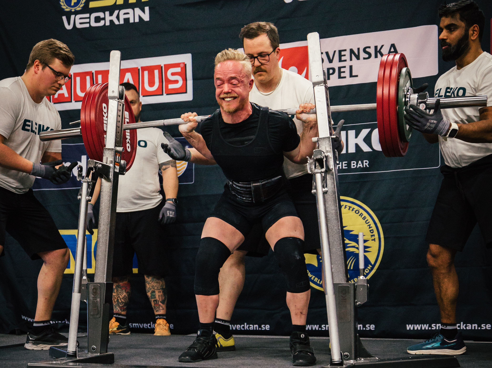

Mina projekt
Kompetenser
-
Styrka
-
Rörlighet
-
Kundbetyg
Bildspel



Styrkecoach och instruktör med fokus på teknik i bänk, knäböj och marklyft. Hjälper nybörjare komma igång och tävlingslyftare att vässa detaljerna.
Jag hjälper allt från nybörjare till tävlingslyftare att lyfta smartare – inte bara tyngre. Min metod bygger på teknikförståelse, skonsam progression och mätbara delmål.
Under passen filmar vi nyckellyft, bryter ner rörelsen och bygger ett personligt fokuskort för bänk/knäböj/mark. Varje block avslutas med en kort checkpoint där vi följer upp rörlighet, toppset och RPE för att styra nästa block.
Utöver lyftarcoaching erbjuder jag workshops för lag/föreningar, samt distansupplägg med veckovis feedback i video.